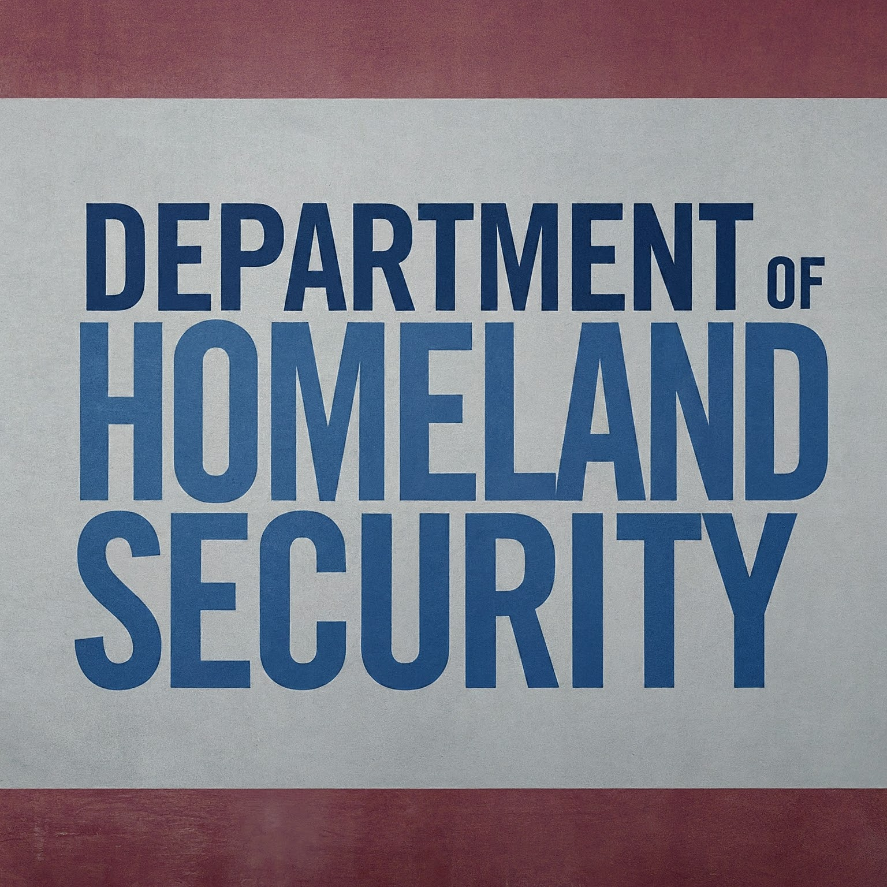

|  |
| Home | Sources | Quiz | |
Securing the Homeland: An Overview of the Department of Homeland SecuritySince the establishment of the Department of Homeland Security (DHS) in response to the September 11, 2001 attacks on the world trade center, the Department of Homeland Security has developed a critical role in monitoring and protecting the United States from a conglomerate of threats both foreign and domestic. The DHS operates with a mission to protect the nation against terrorism, cyber attacks, and even natural disasters. Origins of the DHSIn the aftermath of the 9/11 attacks, it became abundantly clear there were gaps in the United States security infrastructure. At this time, there was no federal entity to oversee, and monitor collective threats to homeland security. Without a unified effort between multiple government agencies the DHS could not exist. Thus the DHS was established on November 25, 2002, under direct order From President George W. Bush. The merger of 22 federal agencies under a single department aimed at establishing communication, coordination, and resource allocation addressing security threats to the United States. Key functions and Responsibilities:
A few of the agencies that operate within the DHS:
Recent Challenges:In recent years, the DHS has undertaken many initiatives to enhance its ability to address threats. A groundbreaking area the DHS is very interested in is the rapid development and implementation of AI technology around the globe. Using AI to process data quickly and efficiently is groundbreaking for something like the DHS. A lot of what the DHS does is analyze data to notice trends or discover discrepancies. Additionally, the department has focused on strengthening partnerships with state and local governments, the private sector, and international allies to enhance information sharing, coordination, and collaboration in homeland security efforts. Despite all this, the DHS faces challenges in a technical world such as our own. Monitoring threats via online platforms can be deceptively challenging, especially when there are a high number of threats to national security circulation online. For example, emerging threats such as domestic extremism, cyber attacks, and the recent proliferation of disinformation campaigns, present the DHS with complex and hard to maneuver challenges that require a focused and strategic response. Conclusion:The Department of Homeland Security stands as the pinnacle of national security, Working around the clock every single day to maintain the protection and freedoms of United States citizens from a host of threats. Using its collection of diverse agencies, qualified personnel, and partnerships with local authorities, the DHS remains committed to its goal, protecting its citizens. As the security landscape continues to evolve, DHS will continue to adapt, innovate, and confront new challenges to ensure the safety and security of the nation now and in the future. |
|||